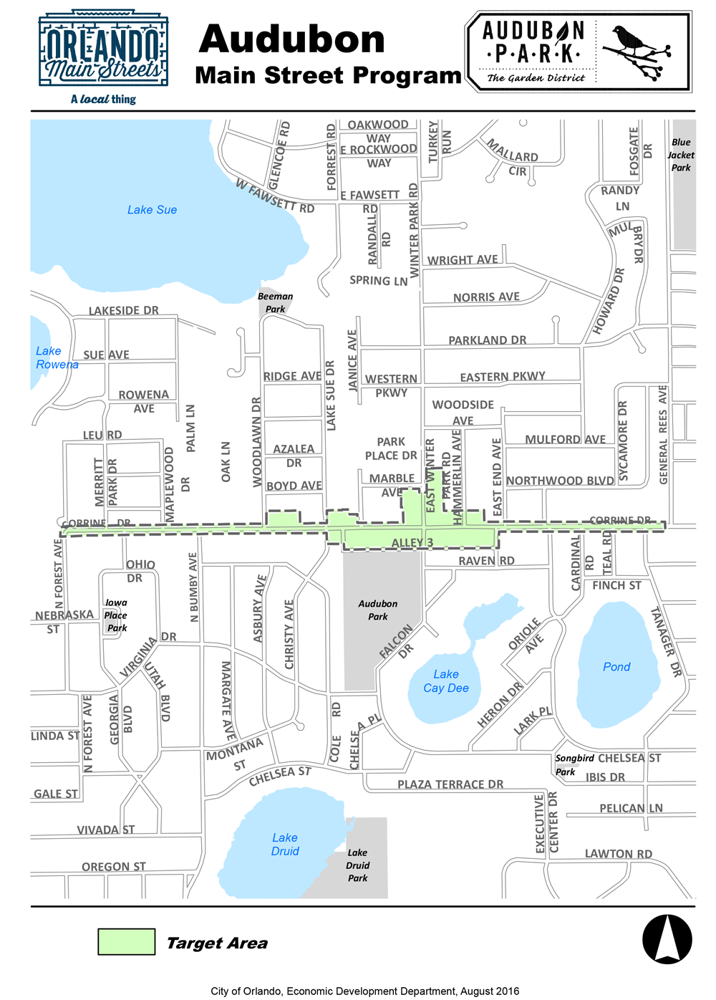
Audubon Park Garden District
August 2016 · Main Street Program
City of Orlando · Economic Development
Tap or hover a district to explore. Click to see the full map & local businesses.

August 2016 · Main Street Program
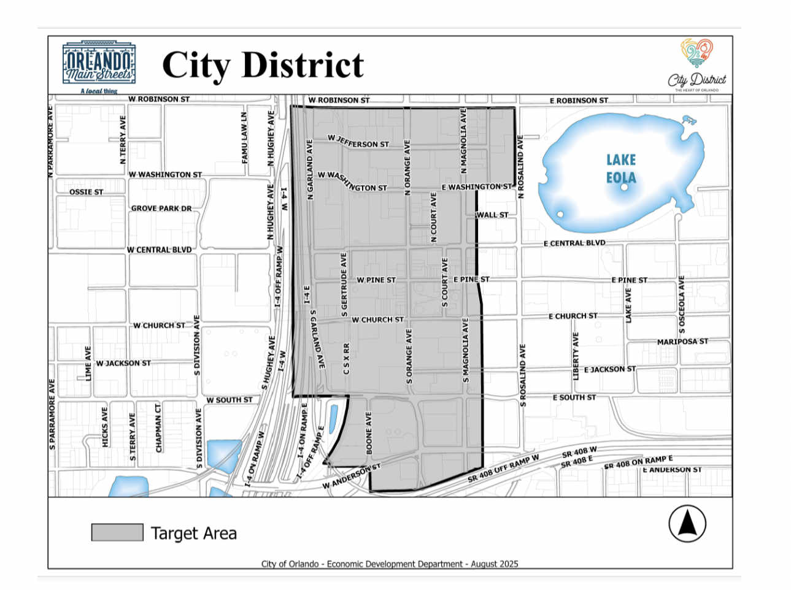
August 2025 · Main Street Program
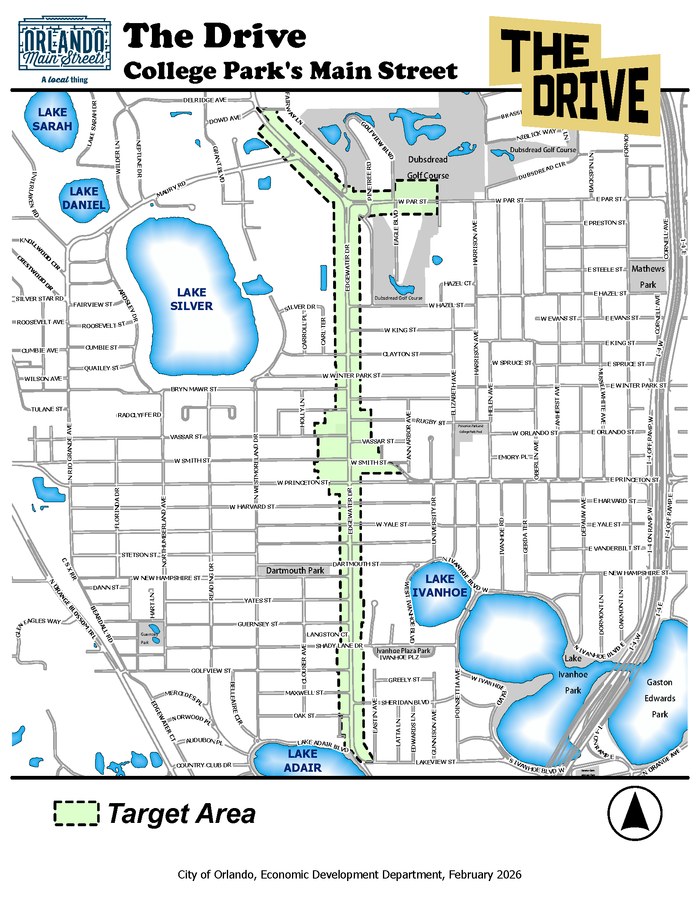
February 2026 · Main Street Program
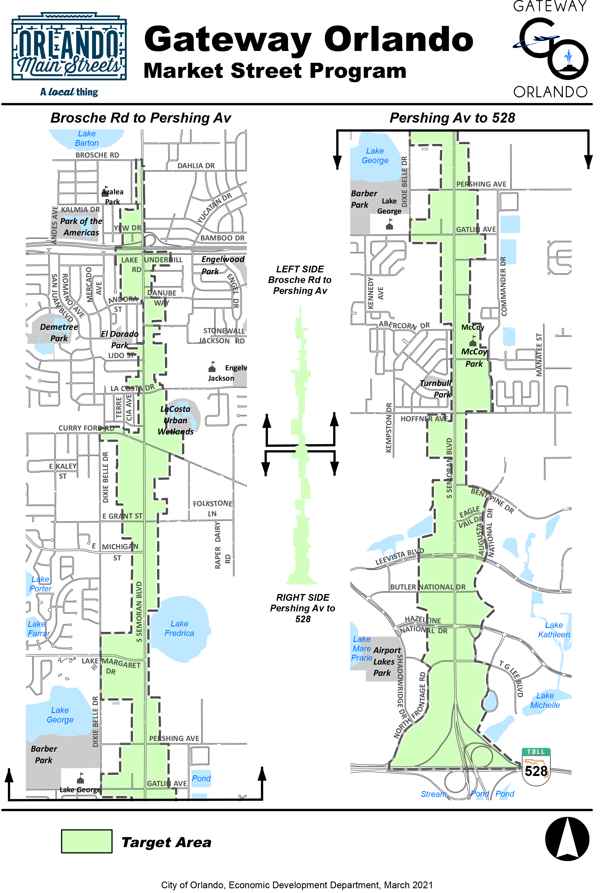
March 2021 · Market Street Program
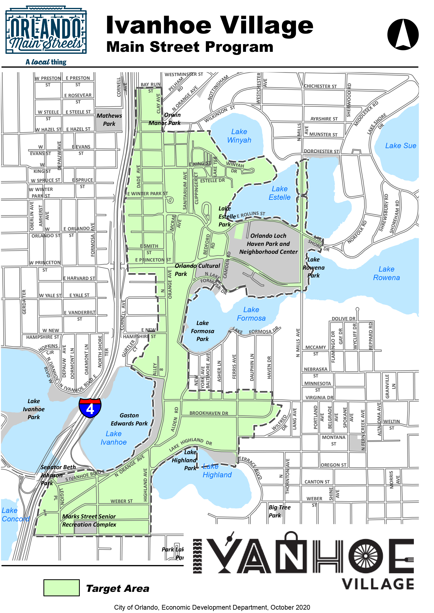
October 2020 · Main Street Program
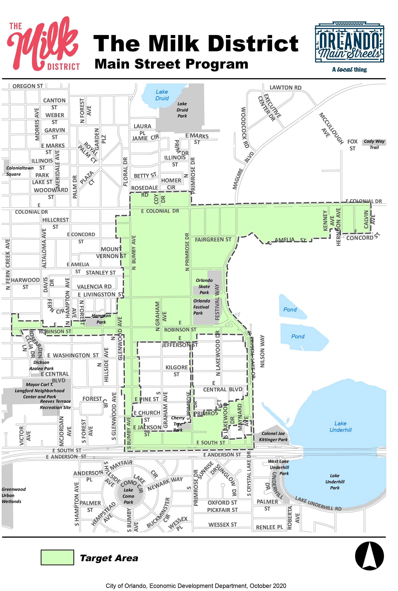
October 2020 · Main Street Program
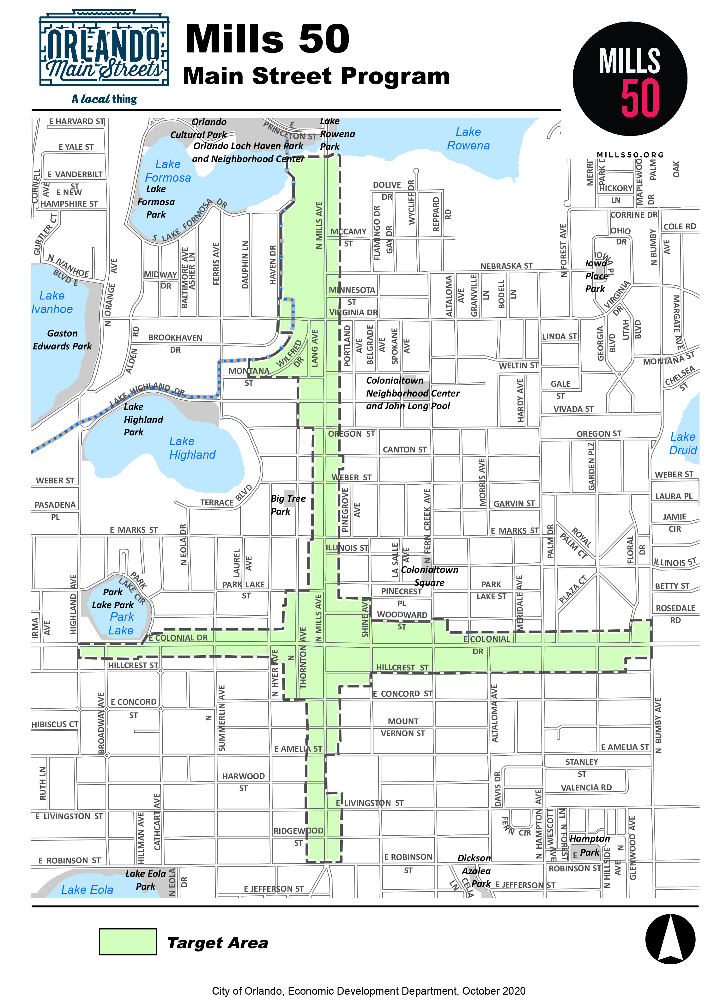
October 2020 · Main Street Program
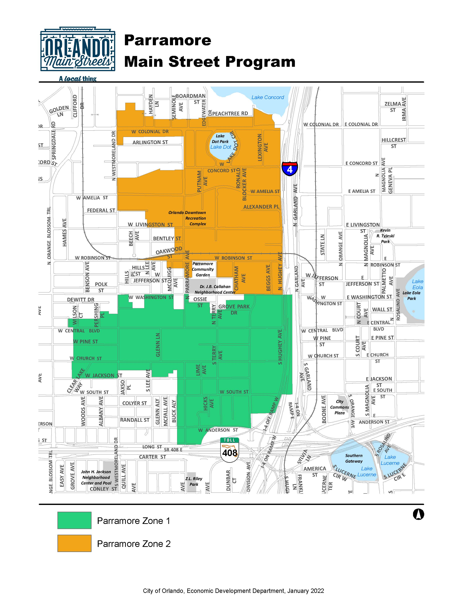
January 2022 · Main Street Program
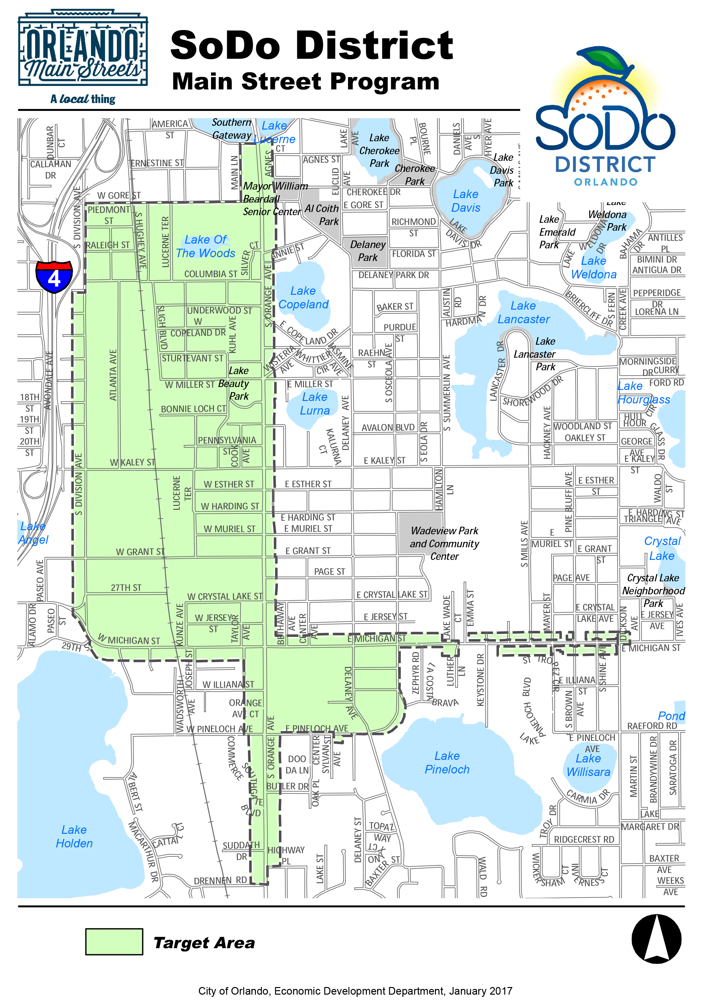
January 2017 · Main Street Program
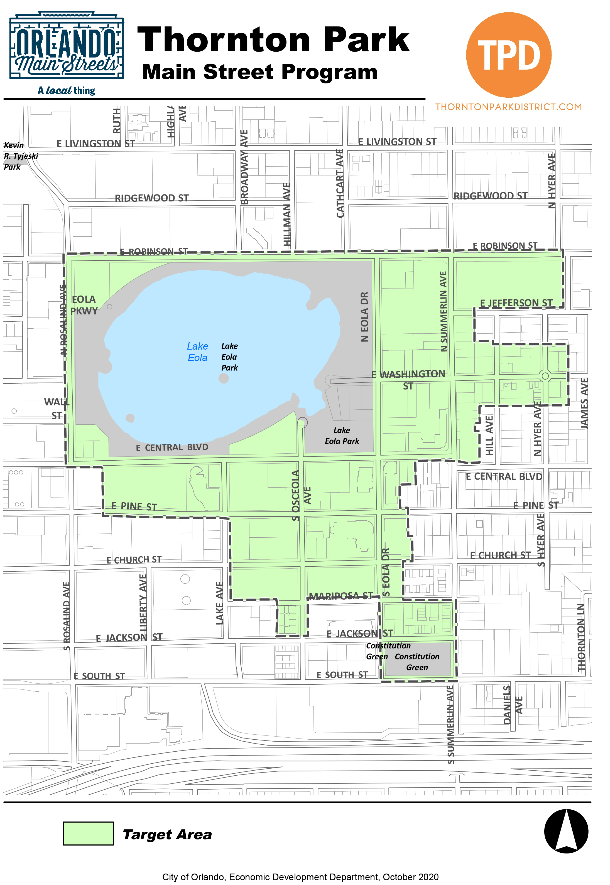
October 2020 · Main Street Program
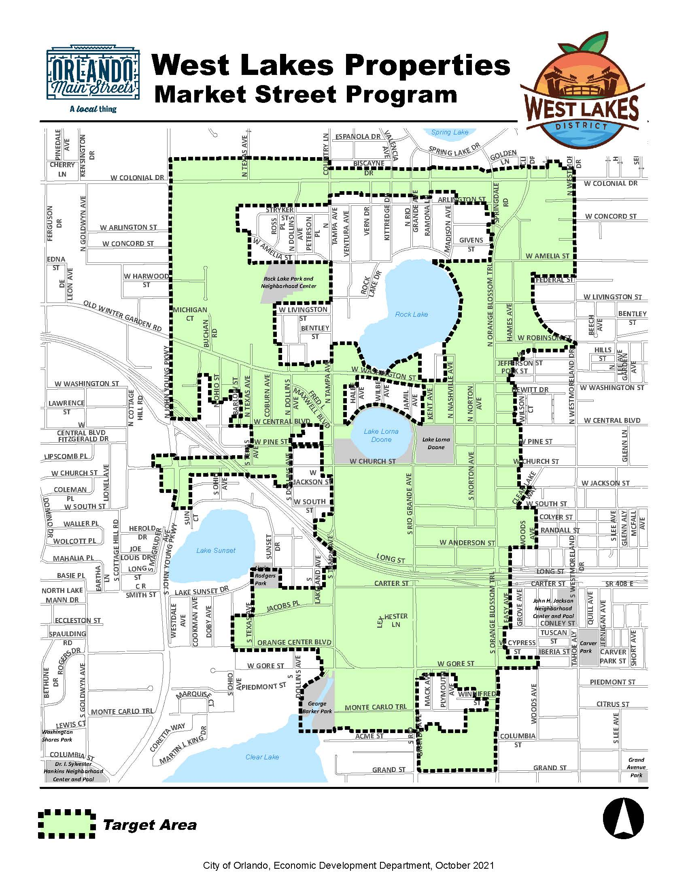
October 2021 · Market Street Program